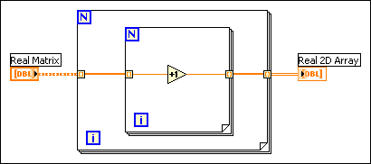
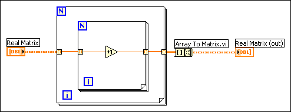
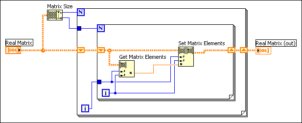

Use the matrix data type instead of a 2D array to represent matrix data because the matrix data type stores rows or columns of real or complex scalar data for matrix operations, particularly some linear algebra operations. The Mathematics VIs that perform matrix operations accept the matrix data type and return matrix results, which enables subsequent polymorphic VIs and functions in the data flow to perform matrix-specific operations. If a Mathematics VI does not perform matrix operations but accepts a matrix data type, the VI automatically converts the matrix data type to a 2D array. If you wire a 2D array to a VI that performs matrix operations by default, the VI automatically converts the 2D array to a real or complex matrix, depending on the data type of the 2D array.
Most Numeric functions support the matrix data type and matrix operations. For example, you can use the Multiply function to multiply a matrix by another matrix or by a number. You can combine basic numeric data types and complex linear algebra functions to create numeric algorithms that perform accurate matrix operations.
|
Note�� Coercion dots appear on VIs and functions when the VI or function converts data to or from a matrix or 2D array. This kind of data conversion does not affect performance because LabVIEW stores matrices the same way it stores 2D arrays. |
A real matrix contains double-precision elements, and a complex matrix contains complex elements with double-precision components. A matrix can have only two dimensions. You cannot create an array of matrices. Use the Bundle function to combine two or more matrices and create a cluster. Matrices have the same restrictions as arrays.
Use the Matrix functions to manipulate elements, rows, and columns in a matrix. The Matrix functions return matrix data types. For example, extract a row or column of a matrix with the Get Matrix Elements function to produce a matrix of one row or column instead of a 1D array of scalar values. Combine this matrix with other arrays with the Build Matrix function to produce a matrix rather than a 2D array of scalar values.
Any VI you build that reduces the dimension of a matrix requires you to convert the data to a 1D array or to a double-precision, floating-point or complex number. If you use the 1D array or number to rebuild a 2D structure, LabVIEW creates a 2D array rather than the original matrix.
The following block diagram uses auto-indexing in a For Loop to extract data from a matrix and reconstruct the matrix in a 2D array.

With auto-indexing enabled, the For Loop treats a matrix as a 2D array. If, at some point in a VI, you need to use the matrix data type as an input, convert the 2D array to a matrix using the Array to Matrix function, as shown in the following block diagram.

To keep the data as a matrix data type, disable auto-indexing and use shift registers. For example, the following block diagram uses shift registers to maintain the two dimensions and data type of the matrix. The shift registers pass the matrix data type between iterations.

Many polymorphic functions that accept the matrix data type return the matrix data type even if the operation itself is an array-based operation. If a function or subVI in a block diagram converts a matrix data type to 2D array and subsequent operations in the data flow are array-based operations, allow the conversion to an array to occur, work with the array data, and then convert the array to a matrix with the Array to Matrix function when you need to, such as when you use the Linear Algebra VIs.
|
Note��If a block diagram includes subVIs that accept matrix data types but return 2D arrays, you do not need to convert the resulting arrays back into matrices before you wire the arrays to polymorphic VIs or functions that accept the matrix data type by default. If you need to store the data as a matrix, use the Array To Matrix function to convert the data back to a matrix. |
By default, matrix controls and indicators show more than one element and display scrollbars for both dimensions. Because a matrix control is a type definition, the shortcut menus for matrix controls exclude the Add Dimension and Remove Dimension options and include type definition options. To create a matrix constant on the block diagram, select a matrix control on the Controls palette and place it on the block diagram or create a constant from any matrix terminal. You can use a matrix constant to store constant data or as a basis for comparison with another matrix.
On the block diagram, the matrix data type looks like a real 2D array or complex 2D array data type with a different wire pattern. The VIs and functions that accept the matrix data type automatically support matrix-specific operations when you wire a matrix data type as an input.
When you wire a matrix data type as an input to one of the following functions, a VI that includes subVIs that work with the matrix data type replaces the function:
The resulting VI has the same icon but contains a matrix-specific algorithm. The node remains a VI if you disconnect the matrix from the input(s). Wire other data types as inputs to restore the original function. If you wire a data type to a function and that data type causes a basic math operation to fail, the function returns an empty matrix or NaN. For example, if you wire a matrix with a dimension of 2�3 to one input of the Add function, then wire a 3�2 matrix to the other input, the function returns an empty matrix.
Use the Equal? and Not Equal? functions to compare matrices. These functions operate in Compare Aggregates mode for matrix inputs and follow the same rules as comparing arrays.
When a numeric function that accepts two or more inputs receives a matrix and a 2D array as inputs, in most cases, the function returns a matrix data type. The function performs the array operation if the output wired to the connector pane is not a 2D array. For example, if you wire a real matrix and a real 2D array to the Divide function, by default the function returns a real matrix output that contains the results of the function. If you wire a real matrix and a complex 2D array, the function returns a complex 2D array because the output requires complex elements. In the second case, a coercion dot appears on the input to which the real matrix is wired to indicate that the function converts the real matrix to a complex 2D array for the operation.
You cannot limit the size of a matrix to a fixed number of elements. However, when you set the default values of a matrix control, you can set the default size.
Do not make the default size of a matrix larger than necessary. If you set a large default size for a matrix, the default data for each element of the matrix saves with the VI and increases the size of the VI on disk.
When you add a matrix control to the front panel, the control initially represents an empty matrix. Each dimension is 0, and the matrix elements are dimmed. A front panel matrix control has two default values�a matrix default value, either a floating-point or complex default value, and a default value in each cell.
The matrix default value is like the default value of any other front panel control. It is the value of the matrix when the VI is loaded. It also is used for a matrix in a subVI when the calling VI does not wire a value.
The scalar default value is the value used to pad the matrix when the matrix expands. For example, if you set the matrix index to a value beyond the defined portion of the matrix and enter a value in an element greater than one row past the defined portion of the matrix, the elements between the previous end of the matrix and the element you added are set to the scalar default.
For the Matrix functions, values appear outside the original matrix or 2D array when the functions perform an invalid operation. In the case of an invalid operation, the values that LabVIEW returns or fills in at exterior locations depend on the data and element type of the original matrix or 2D array. The invalid operations values are different from the default value of 0 that appears when a matrix expands.